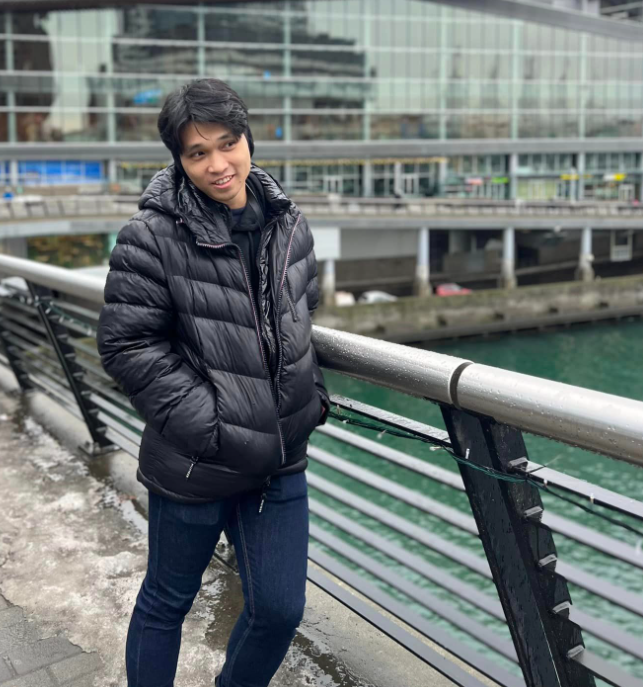

Biely Navarette

Summary 📜
I have diverse background in IT and Electrical/Electronics industry.
Aiming to become a Software Developer and learn different languages.
I'm willing to apply these concepts to develop and create websites, software applications and machine learning.
Education 🎓
Work Experience 💪
Technical Support Specialist - Webcam
Multivista Franchise Systems Inc., (August 2022 - Present)
- Reproduce technical problems encountered by franchisees
- Identify and document technical issues experienced by clients and franchisees remotely
- Provide advice and training to franchisees and clients in response to identified difficulties
- Record and organize a problems and solutions log for use by other technical support analysts in the company's ticketing system
- Use technical manuals, manufacturer's support and other documents to investigate problems and implement potential solutions to
problems faced by clients and franchisees
Configuration Technician
Microserve (November 2021 - August 2022)
- Software and peripheral installation
- Image workstation for new deployments
- Software and network configuration and troubleshooting
- Diagnose, repair, and upgrade PC software and equipment
Senior Technical Engineer
Fiberhome International Technologies Philippines Inc., (January 2020 - August 2021)
- Support integration, migration and system upgrade of OLT.
- Perform Interoperability Testing (IOT) for new firmware/version and hardware released.
- Troubleshooting and repair hardware/software issues for FITSERVER R2200 and FITSERVER R2400.
- Refer to technical specification manuals to guide diagnosing of equipment faults and provide replacement parts of OLT.
- Inspect and conduct service test on hardware and software equipment by remote system to replicate issues identified and provide
solutions.
- Provide technical support to clients remotely or in-person by troubleshooting and configuring Optical Line Termination (OLT)
telecommunication equipment.
Junior Service Engineer
Fujifilm Philippines Inc., (September 2016 - February 2018)
- Document all troubleshooting steps and parts used for reports.
- Installation of parts for the replacement of defective components.
- Track/maintain inventory of camera spare units, spare parts, tools and supplies.
- Diagnose and locate component and equipment faults in Instax, Fujifilm Mirrorless Camera and Fujinon Lens
- Repair and troubleshoot Fujifilm Mirrorless Camera and Fujinon Lens with adjustment and calibration (Alignment of Lens).
Junior Engineer
Power Mac Center Inc., (October 2014 - July 2015)
- Installation of parts for the replacement of defective components and software applications.
- Perform functionality test of iOS (Apple Operating System) and other software applications.
- Document all troubleshooting steps and parts used for reports and by other technical support engineers.
- Replicate technical issues and provide users solutions by following equipment manuals and troubleshooting guidelines.
- Provide in-person technical support to users by diagnosing and locating component and equipment faults in Apple Products such as
MacBook, iMac, iPhone and iPad.
Skills 🤹♂️
- Hardwarde troubleshooting skills
- Familiar with OS: Windows and
MAC
- Familiar with basic networking concept
- Knowledgable in Electrical and Electronics circuit
- Knowledgable in computer systems and IT components.
- Proficient with Microsoft Office: Word, Excel and
PowerPoint
Others 👣